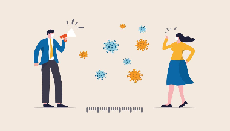

LAKSANAKAN 3 M
-
MEMAKAI MASKER
Memakai masker merupakan upaya yang dirasa paling efektif dalam mencegah persebaran Covid – 19. Dilansir dari tirto.id, masker dapat menekan angka persebaran Covid-19 hingga 70 persen. Namun harus selalu diingat bahwa masker yang digunakan adalah masker yang sesuai dengan standar kesehatan WHO atau yang memenuhi SNI ya!
-
MENCUCI TANGAN
Mencuci tangan dapat menekan angka persebaran Covid-19 sebesar 35 persen. Namun mencuci tangan yang dimaksud disini bukanlah asal membasahi tangan dengan air melainkan dengan mencuci dan menggosok tangan dengan sabun selama 20 – 30 detik, mulai dari telapak tangan hingga sela-sela jari. Mencuci tangan perlu dilakukan setelah kita pergi keluar rumah, saat akan makan, ataupun setelah memegang benda yang juga disentuh banyak orang sehingga tangan kita tetap bersih dan higienis.
-

MENJAGA JARAK
Menjaga jarak yang dimaksud adalah menjaga jarak dengan orang lain minimal 1 meter dimanapun kita berada. Selain itu, kita juga perlu menghindari kerumunan dan tidak keluar rumah apabila tidak mendesak. Apabila kita menerapkan jaga jarak maka kita dapat menekan angka pencegahan Covid – 19 hingga 85 persen.